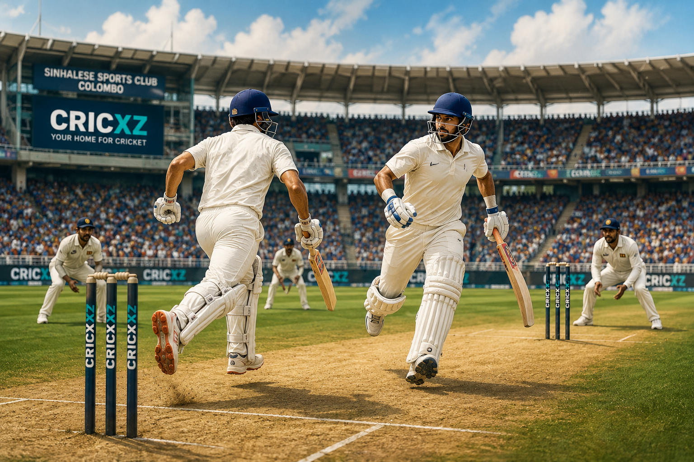

India took firm control in Colombo on a second day shaped by Dhruv Jurel's unbeaten century and two late wickets. After declaring on 503/9, the visitors reduced Sri Lanka to 8/2 before stumps at the Sinhalese Sports Club.
Match details and current status
- Status: In progress after stumps on Day 2, 24 August 2026
- Dates: 23–27 August 2026
- Venue: Sinhalese Sports Club, Colombo
- Toss: India won the toss and chose to bat
- Current score: India 503/9 declared; Sri Lanka 8/2
- Series position: India lead the two-match series 1–0
- Competition: ICC World Test Championship 2025–27
The match remains in progress. All scores and performances below are current through the close of play on Day 2.
Jurel carries India beyond 500
India resumed on 300/5 and added another 203 runs despite a lengthy rain interruption. Jurel held the lower half of the innings together, finishing unbeaten on 115 from 177 balls for his second Test hundred.
Rishabh Pant, who had retired hurt on the opening day, returned to make 63. He and Jurel added an unbroken 112 before lunch, taking India from 307/6 to 419/6 and closing off Sri Lanka's best chance of quickly ending the innings.

A century built around patience
Jurel's progress slowed as he approached three figures, with rain forcing an early tea while he was five short of his century. After the delay, he spent 22 deliveries on 99 before taking a single to mid-off to reach the landmark.
His innings completed the platform laid on Day 1 by Devdutt Padikkal's 117 and Shubman Gill's 50. Pant supplied the acceleration on the second morning, while the lower order stayed with Jurel long enough for India to move past 500 and declare.
Day 2 snapshot
India 503/9 declared; Sri Lanka 8/2 at stumps. Sri Lanka trailed by 495 runs with eight first-innings wickets remaining.
Two late wickets deepen Sri Lanka's trouble
Fading light left India only a brief spell at Sri Lanka's top order, but it was enough to sharpen their advantage. Prasidh Krishna removed Lahiru Udara for 1, helped by Yashasvi Jaiswal's diving catch at third slip. Manav Suthar then trapped nightwatchman Prabath Jayasuriya lbw for 2 with the final ball of the day.
Kamil Mishara reached stumps unbeaten on 5. Sri Lanka will resume 495 runs behind, with the immediate task of surviving India's new-ball pressure and rebuilding after the two early losses.
Fernando leads Sri Lanka's bowling effort
Asitha Fernando was the most successful member of Sri Lanka's attack, finishing with 4/106, while Prabath Jayasuriya took 2/132. Fernando removed three of India's top six on the opening day and returned for a fourth wicket as the visitors pressed towards their declaration.
India's series lead
This is the final match of the two-Test series and forms part of the ICC World Test Championship 2025–27. India came to Colombo 1–0 ahead after a 165-run win in Galle.
Sri Lanka's task on Day 3
At 8/2, Sri Lanka need a substantial partnership simply to steady the innings. India begin the third morning with a 495-run cushion and two new batters to attack.
Match information in this report is current through stumps on 24 August 2026.
Sources
Match and schedule details were verified against the ICC Day 2 report and the Sri Lanka Cricket tour announcement.